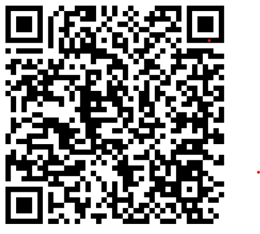
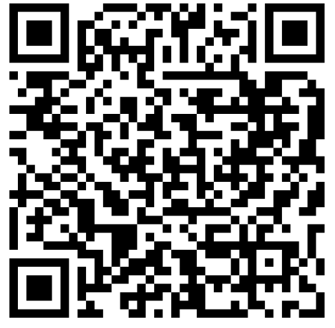

Mission
Our mission is to unify and amplify the sustainability and AI research efforts taking place across RPI’s campus. By creating a collaborative hub for students, faculty, and partners, to submit research papers and discuss their work at conferences and workshops, we aim to connect innovative technological research with actionable environmental impact.
Goals
We aim to:
- Recruit members
- Build connections within sustainability and AI
- Identify key potential research projects
- Publish white papers, present at conferences, and publish in journals
Connect with Us
Get in touch with us to learn more about our initiatives and how you can contribute.
Discord
Join our server for real-time discussion.

LinkedInFollow us for professional updates.

InstagramSee project photos and event highlights.
For further questions reach out to matsiv@rpi.edu